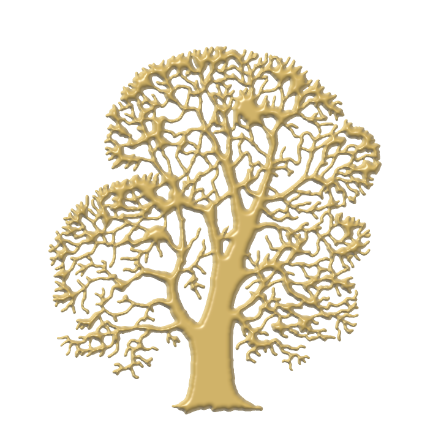
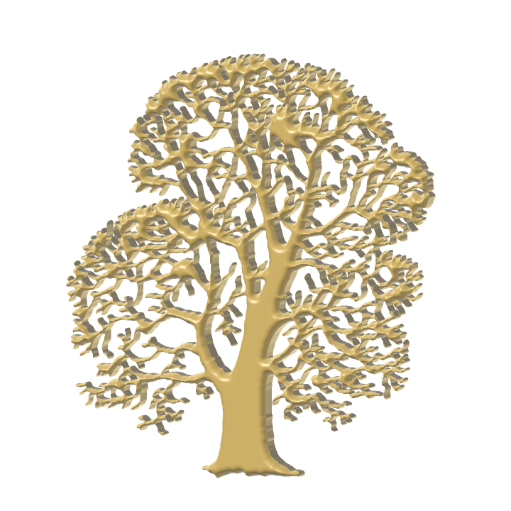
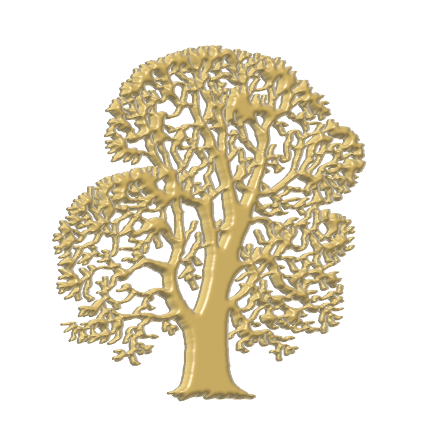

Отчёт по заказу владельца 27.08 · разведка, прототип и кадры ·
tools/gen_heraldry.py
«Герб-дуб в центре главного меню надо сделать не в круге, а как в Skyrim — объектом 3D с краями и без лишнего фона. Найди код (СТРОГО БЕЗ ИИ-МОДЕЛЕЙ) для построения 3D-моделей по 2D-картинке».
Что сделано. Найдены и разобраны классические (без нейросетей) методы;
проверены их лицензии по файлам LICENSE. Написан офлайн-инструмент, который из
нашего силуэта дуба строит настоящий замкнутый 3D-меш с чеканным рельефом и
фаской по краю и кладёт его на полку реестра объектов в формате
.dfo, который движок уже умеет читать. Кадры ниже — рендер ЭТОГО
меша, не рисунок.



Фон у кадров ПРОЗРАЧНЫЙ (как и просил заказ — «без лишнего фона»); тёмная подложка здесь — это страница, а в меню будет чёрное поле со звёздной пылью. Свет в кадрах — ламберт с узким бликом и подсветкой контура; он показывает форму, но не является утверждённым светом меню: свет назначает зона app.
Повороты в кадрах небольшие нарочно: так видно, что объём настоящий (стенка уходит в тень, блик течёт по ветвям), и заодно видно, в каком диапазоне герб хорошо читается. Для сравнения: у эмблемы Skyrim модерский вариант делает полный оборот за 8 с (~45°/с), ванильная качается ещё медленнее.
Главная находка разведки — почти весь «эталонный» открытый код по этой задаче непригоден по лицензии. Проверялось по файлам LICENSE в репозиториях, а не по описаниям в поиске: как минимум один пакет поисковики называют MIT, тогда как у него LGPL-3.
| Инструмент | Роль | Лицензия | Годен? |
|---|---|---|---|
| potrace | векторизация растра, эталон отрасли | GPL-2.0+ (плюс платная коммерческая) | нет |
| potracer, pypotrace | порты potrace на python | GPL-2.0 | нет |
| autotrace, pyautotrace | векторизация | GPL-2.0+ | нет |
| Triangle (Шевчук) | триангуляция Делоне | не открытая: «нельзя включать в коммерческие продукты» | нет |
triangle (PyPI) | обёртка над ним | LGPL-3 НАД запрещённым ядром | нет |
| CGAL (триангуляции, прямой скелет) | вычислительная геометрия | GPL-3.0 / коммерческая | нет |
| polyskel | прямой скелет | LGPL-3 (в поиске числится MIT — неверно) | нет |
эталонный dt.zip Фельценсвальба | точное EDT | GPL-2.0+, но статья CC-BY | код нет, алгоритм да |
| earcut, earcut.hpp, earcut-py | триангуляция с дырами | ISC | да |
| CDT (artem-ogre) | Делоне с ограничениями | MPL-2.0 | да |
| poly2tri | то же, полегче | BSD-3 | да |
| Clipper2 | смещение контура (фаска кольцами) | BSL-1.0 | да |
OpenCV distanceTransform | точное EDT (те же параболы) | Apache-2.0 | да |
scipy distance_transform_edt | EDT (алгоритм Маурера) | BSD-3 | да |
scikit-image find_contours | марширующие квадраты | BSD-3 | да |
three.js ExtrudeGeometry | образец выдавливания с фаской | MIT | да |
| fogleman/hmm | поле высот → адаптивный меш | MIT | да |
| VTracer | векторизация вместо potrace | MIT | да |
| Blender, OpenSCAD, laigter | как ИНСТРУМЕНТЫ | GPL — но результат наш | да, кодом не пользоваться |
Полный список с формулами — в heraldry-algorithms.md.
Это главная развилка, и заказ решает её сам.
| Выдавливание с фаской | Чеканка по расстоянию (выбрано) | |
|---|---|---|
| что делает | контур поднимают на высоту, край скашивают | высота в точке зависит от РАССТОЯНИЯ до края |
| как читается | плитка: плоское поле, скошенное по периметру | монета: ствол выпуклый, веточка тонкая — свет течёт |
| треугольников | мало (сотни) | много: рельеф — это смещённые ВНУТРЕННИЕ вершины |
| для нашего дуба | крона из 200 плоских лоскутов | ветви становятся круглыми в сечении |
Взято второе, с фаской поверх. Расстояние до края — это и есть «толщина массы» в точке, поэтому подушка сама делает ствол выпуклее веточки. Но одна подушка у края имеет вертикальный уклон и «края» как отдельной грани не даёт, а заказ просит именно их — поэтому фаска не отменяется, а кладётся отдельным слагаемым:
h(d) = bevel_h · min(d / bevel_w, 1) ← фаска, постоянный уклон
+ dome_h · sqrt(1 − (1 − min(d,R)/R)²) ← подушка, R = --dome-reachВторое слагаемое — классическая «подушка» (полусфера через расстояние):
при d = R она даёт 1 с НУЛЕВЫМ уклоном, то есть середина массы
ровная, а не остроконечная. Тем же приёмом работают узел Bevel в
Substance Designer («строит поле расстояний и по нему скашивает края в 3D») и
операция Inflate в ZBrush — то есть это и есть отраслевая
практика, а не самоделка.
PNG (652×718, RGBA)
→ альфа → чистка крупинок и мелких дыр
→ ТОЧНОЕ EDT (Фельценсвальб — Хуттенлохер, по статье)
→ МАРШИРУЮЩИЕ КВАДРАТЫ КАК МЕШЕР: крышка сеткой + граничные отрезки
→ сшивка отрезков в замкнутые контуры
→ профиль высоты по расстоянию (фаска + подушка)
→ нормали из градиента поля высот
→ стенка по контуру + плоское дно
→ .dfo на полку реестра + кадры превьюОбычный путь — «обвести контур → упростить → триангулировать earcut'ом» — даёт плоскую крышку из одних лишь граничных вершин. Внутри нет ни одной точки, а рельеф — это смещение именно внутренних вершин: смещать нечего. Пришлось бы дробить треугольники, а дробление разной глубины у соседей рвёт сетку щелями (T-стыки).
Поэтому крышка строится СРАЗУ сеткой: ячейка шага L
отсекается изолинией, внутренняя часть триангулируется веером. Это
Упрощение реализовано и меряется (--dp-report) на 14 950 точках
контура:
| Допуск | Осталось точек | Долой |
|---|---|---|
| 0.25 px | 6 309 | 57.8% |
| 0.50 px | 4 525 | 69.7% |
| 1.00 px | 3 047 | 79.6% |
| 2.00 px | 1 981 | 86.7% |
Соблазн большой, но применять нельзя: упростить контур ПОСЛЕ того, как
крышка сшита по нему, значит развести стенку с крышкой щелью по всему силуэту.
Настоящий рычаг плотности здесь один — шаг сетки --cell.
Названо здесь, чтобы следующая волна не открывала это заново.
Инструмент печатает проверки при каждом запуске и отказывается писать файлы, если меш не сошёлся.
0.0.python3 tools/heraldry/dfo.py --verify.Прибор окупился дважды в этой же волне. Стенка, выписанная «естественным» порядком обхода, оставила ровно 19 600 несопряжённых рёбер — по два на каждый из 9 800 отрезков контура; а после починки обнаружился полностью замкнутый и при этом вывернутый наизнанку меш (объём −0.0248 м³): переход из осей картинки, где Y смотрит вниз, в мир, где Y вверх, — это отражение, а отражение меняет знак ориентации. Ни то, ни другое на кадре анфас не видно.
| Величина | Значение |
|---|---|
| исходник | 652×718 RGBA, покрытие 31.6% |
| чистка | выкинуто 57 крупинок (2–6 px), заткнуто 170 мелких дыр, осталось 166 дыр кроны |
| самое «толстое» место | 39.6 px (ствол) |
| шаг сетки | 2.0 px |
| вершин / треугольников | 166 326 / 213 856 (крышка 91 978 + дно 91 978 + стенка 29 900) |
| габарит | 0.801 × 0.885 × 0.053 м, рельеф 35 мм над плитой |
| файл | 8.5 МБ, хэш d7cc2d5c42433407 |
| время запечки | ~4 с меш, ~14 с три кадра превью |
Плотность меняется одним ключом:
--cell 2.5 → 145 790 тр. (6.0 МБ), --cell 3.0 →
107 836 тр. (4.6 МБ), --cell 1.6 → 314 408 тр. (12.1 МБ).
Главное, что надо знать заранее: меню — это НЕ 3D-путь. Страницы меню
рисуются на PixelCanvas — процессорном холсте пикселей
(MenuArt.h: «a decoded .png fitted into a box with alpha»), который
затем одной текстурой кладётся поверх кадра. Печать сегодня — это
draw_image_fit(canvas, cached_png(BRAND_SEAL_PNG), …) в
Menu.cpp:1456, то есть готовый PNG в круге на пергаменте. Меша там
нет и быть не может: холст не знает ни глубины, ни света.
Хорошая новость: всё нужное в движке уже есть, ничего изобретать не надо. Ниже — список того, что предстоит связать. Рендер-код я по заказу не писал, это следующая волна.
| Что | Есть ли | Чем берётся |
|---|---|---|
| прочитать объект с полки | есть | render::read_object(path) — сверяет хэш сам |
| завести меш на видеокарте | есть | IRenderer::create_mesh(vertices, indices) |
| шейдер под вершинный цвет + свет | есть | load_program("prop") — тот же, которым рисуются стволы |
| нарисовать с поворотом | есть | submit(mesh, program, transform, …) |
| камера и свет для экрана меню | нет | begin_frame(view, proj) + FrameEnvironment (sun_direction / sun_color) — меню сейчас своей камеры не ставит |
| положить холст меню ПОВЕРХ герба | есть | RenderSystem::draw_overlay(renderer, canvas, …) |
Оценка ниже сбылась почти дословно, но три вещи разошлись с ней — и разошлись так, что стоят отдельного абзаца.
Sequential, а
холст рисуется смешивающей программой и глубины не пишет, — поэтому меш,
посланный следом, ложится поверх (RenderSystem::ScreenProp).dfn_aerial
и увела бы теневую сторону золота в серое. Осталась точечная лампа: теней без
слота не даёт, гейтов не трогает и — главное — ПОЗИЦИОННАЯ, то есть блик по
фаскам течёт, когда герб качается. Солнце гасится и кладётся ниже
SHADOW_MIN_SUN_ELEVATION, чтобы карта теней не строилась вовсе;
его азимут при этом всё-таки читается — направленной составляющей заливки.Темп: КАЧАНИЕ, а не оборот (±13° за 11 с, плюс наклон ±4.5° за 17 с — периоды несоизмеримы нарочно). Причина не вкусовая, а в §6 этой же страницы: рельеф у меша только на ЛИЦЕ, дно — плоская плита. Полный оборот половину круга показывал бы тусклый блин. Когда рельеф переедет в карту нормалей (хвост из этого же раздела), оборот станет законным.
Цена кадра — ноль в пределах измеримости. Три руки из ОДНОЙ сборки
(DFN_MENU_OAK=1/0/none), DFN_VSYNC=0, 1500 кадров,
первые 20 выброшены: минимум 1.488 мс с гербом и 1.488 мс без него,
медианы 1.714 и 1.704 мс. 214 тысяч треугольников в одном непрозрачном вызове
видеокарта не замечает; кадр меню упирается в ежекадровую заливку холста
1920×1080 и в увеличение.
Срез ствола закрыт КАДРИРОВАНИЕМ, а не починкой меша (владелец, 27.08): герб занимает 0.94 высоты кадра и уходит подошвой за нижний край. Название игры переехало НАД крону — под ней места не осталось.
Связывание — небольшое: загрузка объекта при входе в меню и снос при
выходе, свой view/proj и одно-два источника света на экран меню,
матрица поворота от часов, вызов submit до наложения холста.
Порядок — десятки строк в Menu.cpp плюс поля жизненного цикла.
Настоящая работа не в коде, а в назначении света и темпа вращения: это
вкусовое решение и приёмка глазами, а не строки.
Два вопроса, которые стоит решить ДО связывания — оба всплыли из разведки и из числа треугольников.
1. 214 тысяч треугольников — это высокополигональный ИСХОДНИК, а не
боевая форма. Эмблема Skyrim устроена иначе: настоящий меш
logo.nif, но рельеф живёт в карте нормалей
logo02_n.dds, а «дорогой металл» даёт кубическая карта
окружения в материале. Геометрия там сравнительно простая. Правильная
боевая форма и у нас такая же: низкополигональная плита с запечённой картой
нормалей. Наш меш — ровно тот исходник, с которого её пекут. Работать он будет
и так (лесной кусок сцены — 160 тыс. треугольников, и он живой), но 8.5 МБ на
одну эмблему — цена, которой можно не платить.
2. Ствол у силуэта обрезан нижним краем картинки. Это свойство исходника (маска доходит до строки 717 из 718), и на кадрах видно плоский срез у основания. Для печати в круге это было незаметно, для отдельно стоящего объёмного герба — заметно. Решать владельцу: оставить как есть, подрезать композицию или доработать силуэт.
| Файл | Что это |
|---|---|
tools/gen_heraldry.py | инструмент: силуэт → меш → .dfo → кадры |
tools/heraldry/geometry.py | EDT, марширующие квадраты как мешер, сшивка контуров, Дуглас — Пойкер |
tools/heraldry/dfo.py | формат .dfo на python + --verify (сверка с байтами движка) |
tools/heraldry/png_io.py | чтение и запись PNG без Pillow (его в системе нет) |
tools/heraldry/preview.py | программный растеризатор для кадров |
assets/objects/heraldry/oak-seal-relief.dfo | испечённый герб на полке реестра |
docs/reports/heraldry/oak-seal-{0,1,2}.png | кадры этой страницы |
docs/reports/heraldry-algorithms.md | указатель алгоритмов и лицензий |
python3 tools/gen_heraldry.py # печать по умолчанию, ~18 с
python3 tools/gen_heraldry.py --cell 2.5 # легче меш
python3 tools/gen_heraldry.py --dp-report # замер упрощения контура
python3 tools/gen_heraldry.py --obj # ещё и Wavefront .obj (18 МБ)
python3 tools/heraldry/dfo.py --verify # сверка формата с полками движкаЗависимости: numpy и стандартная библиотека. Ни Pillow, ни scipy,
ни одной строки заимствованного кода. Силуэт: Wikimedia Commons, «Quercus robur
Silhouette», автор oddsock, CC BY 2.0 — атрибуция в титрах обязательна
(assets/branding/README.txt).